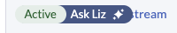
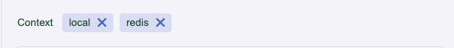

Interagir avec Liz (Assistant IA)
Mise en route avec Liz
Liz comprend un assistant IA persistant nommé Liz. Vous pouvez ouvrir l’assistant à tout moment en cliquant sur l’icône Liz icon  dans l’interface utilisateur.
dans l’interface utilisateur.
Lorsque vous ouvrez le volet latéral, Liz vous accueille avec des suggestions basées sur le contexte de votre page actuelle. Lors d’une conversation, Liz fournit :
-
Deux actions suggérées pour continuer le flux de travail actuel.
-
Une action exploratoire pour en savoir plus sur des sujets connexes.

Conscience du contexte
Liz comprend exactement ce que vous regardez. Toute ressource avec un badge de statut dispose d’un bouton Demander à Liz.
-
Cliquez sur l’icône bouton coulissant Demander à Liz à côté d’une ressource.

-
Le volet latéral s’ouvrira avec une invite personnalisée générée automatiquement pour cette ressource spécifique.
-
Liz collecte automatiquement le nom de la ressource, l’ID de cluster et l’espace de noms pour fournir une aide précise.

Confirmation des actions
La sécurité est une priorité.
Si vous demandez à Liz ou à l’un de ses agents spécialisés de modifier votre environnement (comme mettre à jour un déploiement ou changer la configuration d’un cluster), Liz présentera une invite de confirmation.

Vous devez cliquer sur Confirmer avant que des modifications ne soient appliquées à votre système.
Gestion des Conversations
Vous pouvez maintenir plusieurs fils de discussion ou enregistrer votre historique pour référence ultérieure.
-
Créer un Nouveau Chat: Pour commencer une nouvelle session, cliquez sur l’icône Nouveau Chat.

-
Télécharger l’Historique: Pour sauvegarder une trace de votre conversation, cliquez sur l’icône Télécharger. Cela enregistre un fichier
.txtde la transcription sur votre disque local.

Changement d’Agents
Par défaut, Liz utilise le "Routage Intelligent" pour envoyer votre demande au meilleur agent spécialisé (par exemple, un Agent de Sécurité pour les vulnérabilités).
Si vous souhaitez parler à un agent spécifique manuellement :
-
Cliquez sur l’icône Sélection d’Agent.

-
Choisissez l’agent souhaité dans la liste.
| Si Liz remarque que vous utilisez fréquemment le même agent, elle peut suggérer de passer en mode manuel pour cette session. |
Exemples de Prompts à Essayer
Vous ne savez pas par où commencer ? Essayez de poser ces questions à Liz :
| Catégorie | Invite de l’utilisateur | Agent de gestion |
|---|---|---|
Sécurité |
Quelles de mes charges de travail en cours sont affectées par des vulnérabilités ? |
Agent de sécurité (récupère les données CVE et de scan) |
Inventaire |
"Listez tous les registres utilisés dans tous mes clusters." |
Agent Rancher (interroge les ressources à l’échelle du cluster) |
Capacité |
"Montrez-moi les 5 pods consommant le plus de mémoire." |
Agent Rancher (interroge les données d’utilisation des ressources) |
Navigation |
"Quelle est la signification de ce statut ?" |
Logique de contexte (interprète le statut des ressources depuis l’interface utilisateur) |
Dépannage |
"L’application est lente ; trouvez la cause profonde." |
Agent SUSE Observability (analyse les métriques et les journaux) |
Skills up |
Comment installer un chart Helm dans Rancher ? |
Knowledge (fournit des sources de documentation) |
Provisioning |
"Analysez le cluster et résolvez les problèmes éventuels." |
Agent de provisionnement Rancher (vérifie la santé de l’infrastructure) |